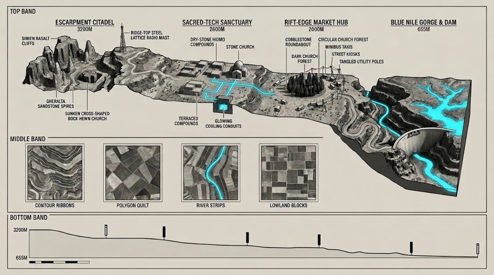
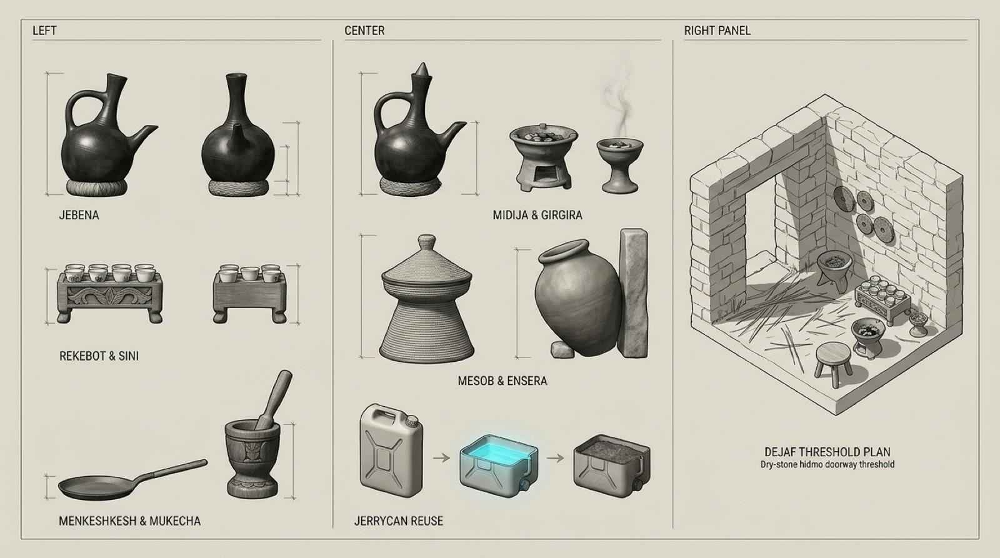
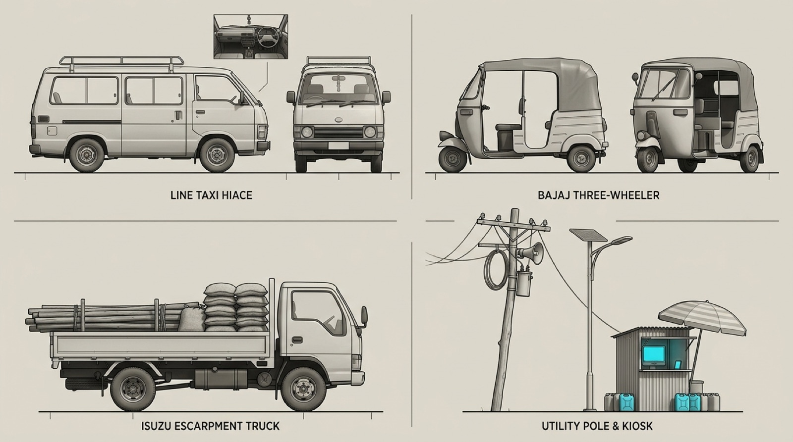
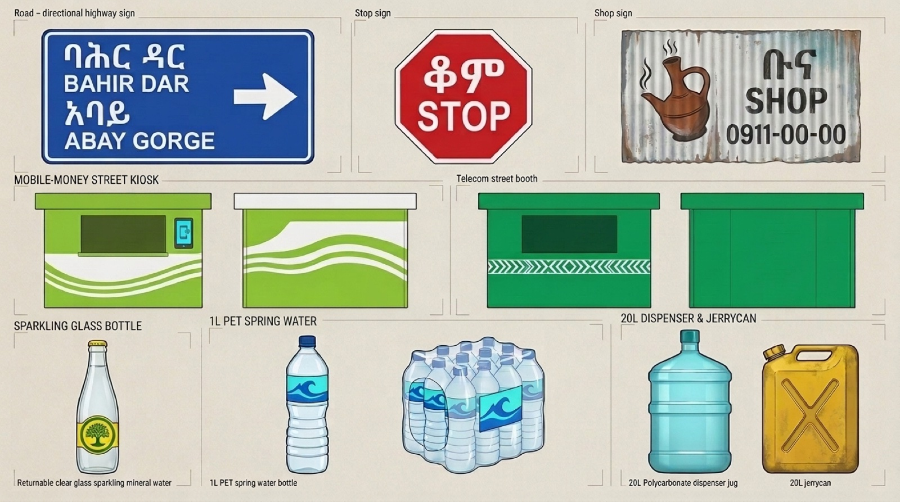

1 · Compressed GTA Transect & 4 Orbital Field Geometries
3,200m Escarpment Citadel → 2,600m Sacred-Tech Sanctuary → 2,000m Rift-Edge Market Hub → 655m Blue Nile Gorge
& GERD Dam, with Contour Ribbons, Polygon Quilt, River Strips & Lowland Blocks.

2 · Buna Ceremony & Dejaf Threshold Habitus Kit
Jebena on matot ring, Rekebot & Sini, Midija & Girgira, Menkeshkesh & Mukecha, Mesob &
12°-tilted Ensera, 3-state 20L Jerrycan reuse, Kettama grass & Kubet wall discs.

3 · Highland Transit Fleet, Tangled Poles & Kiosk
Blue/white Toyota HiAce line taxi, sky-blue Bajaj auto-rickshaw, Isuzu FSR escarpment freight truck (teff
sacks + eucalyptus logs), crooked utility pole, solar cobra light & kiosk.

4 · Bilingual Ge'ez/Latin Signage, Kiosks & Water Packaging
ERA royal-blue ባሕር ዳር / BAHIR DAR & አባይ / ABAY GORGE sign,
ቆም / STOP, tin ቡና / SHOP plaque, Telebirr/Telecom booths, Ambo glass, 12-pack PET
& 20L jugs.
Executable Worldtext & Master Bible
Full write-up & relational JSON scene manifest compiled in this directory:
Exact Coordinates & Yosemite Parallels
- Simien · Imet Gogo (
13.2167°N, 38.0833°E, 3,926 m):
1,000–2,000m sheer basalt drop (Glacier Point parallel).
- Gheralta Spires (
13.9722°N, 39.4286°E): 250m+ vertical Adigrat sandstone
towers.
- Blue Nile (Abay) Gorge (
10.0750°N, 38.1917°E): 1,200m 3-tier canyon relief.
- GERD Hydroelectric Dam (
11.2153°N, 35.0931°E): 500m bed →
655m crest; fed by Mt. Belaya (2,731m) & Mt.
Dangur (2,488m).
Sub-Meter Parcel & 3D DEM/LiDAR Stack
- Fields of the World (FTW): GeoParquet smallholder parcel vectors
(
s3://us-west-2.opendata.source.coop/tge-labs/ftw-global-data/).
- SLLC Rural Cadastre:
50M+ parcels digitized on 0.25m
orthophotos (1:2,000).
- EthCT2020 & DE Africa 10m:
2,793 crop plots
(DOI: 10.17632/mfpvmk8cnm.1) + STAC crop_mask_eastern.
- 3D Elevation & TLS:
FABDEM v1.2 + Copernicus GLO-30 +
AW3D30, Bale 0.84m SfM DEM (zenodo.7269999), and Zamani
Project Leica TLS of Lalibela & Fasil Ghebbi.